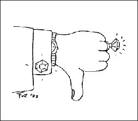

|
Lunch With The Fatman | 1, 2, 3
"Sour Power: The Power Of Negative Thinking"
Hi. Sit down. What are you having? Welcome to Lunch with the Fat Man.
Do you want power? Power to take control over your own life? Power to get what you dream of having --to get that successful band or that recording contract or true professional dignity or that teen-ager in the front row? Well I offer you that power, with my new philosophy, science, book, and videotape series entitled The Power of Negative Thinking.
Sure, there have been great names in history to use the power of positive thinking -- Carnegie, Hitler, and numberless Amway sales people. But these are not the types of role models for an intelligent reader like you. What musician wants to be down and out, but knowing he is going to succeed because he is "reaching for the stars?" It's corny, it's questionable as a rock and roll image, and, quite frankly, I suspect the philosophy of concealing hidden tricks because it seems too damn easy. Negative Thinking ™, on the other hand, can bring you all the benefits, control, and power of that other scam, but with none of the Jim Bakker side effects.
For instance, let's look, in alternating paragraphs, at two bands, a positive band and a negative band, as they simultaneously work on their demo recordings, with which they hope to get a record company contract.
The negative band has been saving for two years for this project because they've never felt they were good enough, so now they have twice the money they need to make a recording. Now they generally feel that the band can't hold together much longer, so they may as well make a tape, since it just doesn't matter.
In their minds, the positive band has already succeeded. Counting on all the mental money they have made, they hock all of their non-essential instruments and transportation to make this recording.
The negative guitar player brings two complete rigs to the studio, and shows up an hour early. Why? Because he is thinking sour. He knows one of them is going to blow up.
He even brings a spare bass, because he knows that the bass player can be a real airhead.
 Meanwhile, at Golden Opportunity 1024-track studio (You have to think big to be big) the Happy Boys are attempting to record eight songs in four hours (nothing ventured, nothing gained). I assume the reader has had some recording experience, and can guess what will happen. Eight songs, they feel, is a good length for a demo, because the record guy will want to hear lots and lots of their music, because it will be the best tape he's ever gotten.
The Malcontents, across town, are only going to do a three-song tape, because the record company guy probably has a stack of tapes he has to listen to, and he'll be insulted if they ask him to listen to a whole album. They’ll need to have the best tunes they've written on the tape, because anything less would probably fail. So they've rehearsed and re-composed the paint off of four songs (one extra just in case the singer forgets the words of one of them, or in case the tape gets crumpled, or one of those things that always seems to happen to them happens).
The Yes's tape turns out just fucking fantastic, the greatest thing you've ever heard out of Austin.
The No's tape is fairly acceptable at a national level.
The Gallant know their fans are loyal and would love to buy their tape, especially if it would help the band by offsetting the costs of recording. Their word-of-mouth, advertising is good, so they sit back and get ready to sell their new tape. Of course, there's no tape duping money left in the kitty after recording, but they can dub cassettes one at a time on a jam box.
Unlike the Gallants, the Goofuses see no certain future in music, so they all have day jobs and a little extra money, albeit never enough. Since music doesn't sell (When they asked their producer, Yours Truly, if I thought their music would sell, I taught them the new Fat axiom: Music doesn't sell. Drugs sell.) they are launching a massive mailing and publicity campaign to try to squeeze a little good out of their tape, so that, even when they are unable to sell themselves to a record company, the project won't have been a total loss.
The Smileys' future looks good – they’ll be driving cars (Ferraris, no doubt) and have phones again when the money they're sure to get from the record company advance starts rolling in.
The Frownies aren't so happy; now they have to deal with lawyers and contracts and big-time snakes, because they've got a four-year contract with CBS -- a situation they find barely acceptable. And the damn hot tub always seems to have too much chlorine. And the maid always leaves little piles of caviar under the oriental rugs.
You say it can't be any good? You say sour power is a crackpot philosophy? You say it couldn't possibly be proven effective until controlled experiments are undertaken, in which a band such as yours gives these methods a thorough test? Well, you're on the right track.
Say, this was great. Let's have lunch more often.

|